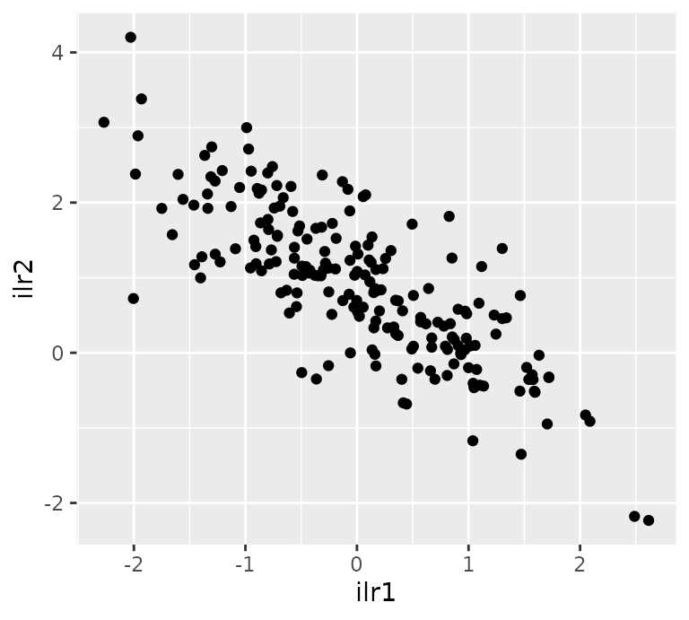
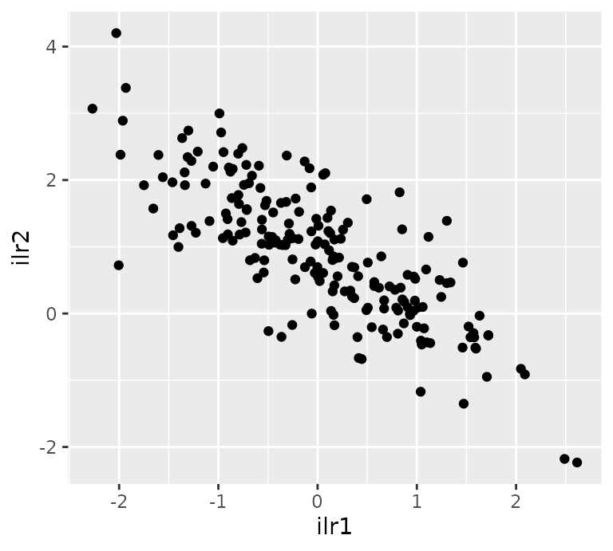

The logratio-normal-multinomial distribution
lrnm.RmdThe logratio-normal-multinomial (LRNM) distribution is the distribution obtained from the compounding of a normal distribution defined on the Simplex using log-ratio coordinates with the multinomial distribution.
We can build a sample of a LRNM as follows:
- Firstly, for given parameters \(\mu\) and \(Sigma\) and a certain clr-basis, we generate a log-ratio normally distributed sample :
set.seed(1)
N = 200
mu = c(0,1)
sigma = matrix(c(1, -0.8,
-0.8, 1), nrow = 2)
B = ilr_basis(3)
P = as.data.frame(rlrnormal(n = N, mu, sigma, B))
H = coordinates(P, B, label = 'ilr')We can visualise either the compositional sample in a Ternary diagram or their coordinates (with respect basis \(B\)).
ggtern() +
geom_point(data = P, aes(x = V1, y = V2, z = V3))
ggplot() +
geom_point(data = H, aes(x = ilr1, y = ilr2)) 

- After the logratio-normal random variables are generated, they are used to generate a new sample of counts using the multinomial distribution. With the function
rmultinomial()we can generate that sample.
SIZE = 8
Y = as.data.frame(rmultinomial(size = SIZE, p = as.matrix(P)))In coda.count we can compound this to generations using the function rlrnm():
sample = rlrnm(n = N, size = SIZE, mu = mu, sigma = sigma, probs = TRUE)
Y = as.data.frame(sample)
P = attr(sample, 'probs')To visualise the counting sample we can use a ternary diagram, but observations will only appear in discrete positions. In general, we call the \((K-D)\)-simplex lattice the sapce for the \(D\)-part count data with size \(K\).
key = function(x) paste(x, collapse = '-')
tab = table(apply(Y, 1, key))
Yc = Y[duplicated(Y),]
Yc$freq = as.numeric(tab[match(apply(Yc, 1, key), names(tab))])
lbls = paste(' ', 0:SIZE, ' ')
brks = 0:SIZE/SIZE
ggtern() +
geom_point(data = Yc, aes(x = V1, y = V2, z = V3, col = freq), size = 3) +
theme(tern.axis.arrow.show = T,
tern.axis.title.show = F,
tern.axis.arrow.text = element_text(face = 'bold')) +
scale_color_gradient(low = 'blue', high = 'red') +
scale_T_continuous(minor_breaks = NULL, breaks = brks, labels = lbls) +
scale_L_continuous(minor_breaks = NULL, breaks = brks, labels = lbls) +
scale_R_continuous(minor_breaks = NULL, breaks = brks, labels = lbls) +
labs(col = 'Frequency')
#> Error in validDetails.segments(x): invalid 'arrow' argumentFor given parameters \(mu\) and \(\Sigma\) we can calculate the probability mass function for each element in a \((8-3)\)-simplex lattice:
SL3 = simplex_lattice(SIZE, 3)
X = as.data.frame(SL3)
X$p = apply(X, 1, dlrnm, mu, sigma)
ggtern() +
geom_point(data = X, aes(x = V1, y = V2, z = V3, col = p), size = 3) +
theme(tern.axis.arrow.show = T,
tern.axis.title.show = F,
tern.axis.arrow.text = element_text(face = 'bold')) +
scale_color_gradient(low = 'blue', high = 'red') +
scale_T_continuous(minor_breaks = NULL, breaks = brks, labels = lbls) +
scale_L_continuous(minor_breaks = NULL, breaks = brks, labels = lbls) +
scale_R_continuous(minor_breaks = NULL, breaks = brks, labels = lbls) +
labs(col = 'Probability')
#> Error in validDetails.segments(x): invalid 'arrow' argumentFor the sample Y we can
Expected estimated posterior probabilities
P_exp = as.data.frame(fitting$P)
tab = table(apply(P_exp, 1, key))
P_exp = P_exp[duplicated(P_exp),]
P_exp$freq = as.numeric(tab[match(apply(P_exp, 1, key), names(tab))])
H_exp = coordinates(P_exp[,1:3])
H_exp$freq = P_exp$freq
ggtern() +
geom_point(data = P_exp, aes(x = x1, y = x2, z = x3, col = freq)) +
scale_color_gradient(low = 'blue', high = 'red')
ggplot() +
geom_point(data = H_exp, aes(x = ilr1, y = ilr2, col = freq)) +
scale_color_gradient(low = 'blue', high = 'red')

ellipse = function(mu, sigma, p){
s = -2 * log(1 - p);
ev = eigen(sigma * s)
t_ = seq(0, 2 * pi, length.out = 500)
a = mu + t((t(ev$vectors) * sqrt(ev$values))) %*% rbind(cos(t_), sin(t_))
as.data.frame(t(a))
}
coda_ellipse = function(mu, sigma, p, B = ilr_basis(length(mu) + 1)){
composition(ellipse(mu, sigma, p), B)
}